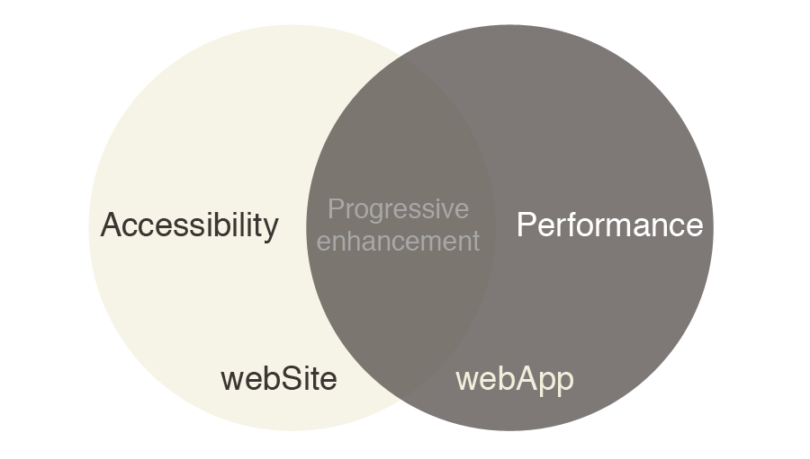

<title>Building Modern Web Applications with Backbone Boilerplate</title>

<!-- External files -->
<meta http-equiv="content-type" content="text/html; charset=UTF-8">
<link rel="stylesheet" href="./deck.js/core/deck.core.css">
<link rel="stylesheet" href="./deck.js/themes/transition/horizontal-slide.css">
<link rel="stylesheet" href="css/bootstrap.css">
<link rel="stylesheet" href="css/transport.css">	
<link rel="stylesheet" href="css/ir_black.css">	
<script src="./deck.js/modernizr.custom.js"></script>

<article class="deck-container">

  <section class="slide" id="intro">
    <div>
      <h1 class="title">Building Modern Web Applications with Backbone
        Boilerplate</h1>
    </div>
  </section>
  
  <section class="slide" id="about">
    <div>
      <h1>Who Am I?</h1>

      <ul>
        <li>Senior Software Engineer at Bocoup
        <li>Backbone.js contributor
        <li>Backbone Boilerplate, LayoutManager, and use.js
      </ul>
      <hr>
      <ul >
        <li>Skydiver
        <li>Rock climber
      </ul>

      <h3 class="dim bottom">@tbranyen</h3>
    </div>
  </section>

  <section class="slide" id="codestyle">
    <div>
      <h1>Code style</h1>

      <ul>
        <li>JavaScript not CoffeeScript
        <li>2 space soft tabs
        <li>Strict 80 columns
        <li>Multiple var, semicolons, double quotes, and comma last
      </ul>
    </div>
  </section>

  <section class="slide" id="context">
    <div>
      <h1>Context</h1>
    </div>
  </section>

  <!-- TODO Not happy with this graphic -->
  <section class="slide" id="appvssite">
    <div>
      
    </div>
  </section>

  <section class="slide" id="who">
    <div>
      <h1>Who is consuming?</h1>
      <ul>
        <li>Search engines (SEO)
        <li>Everyone (Accessibility)
        <li>Controlled environments (PhoneGap/Air)
        <li>Semi-controlled environments (Minimum browser requirements)
      </ul>
    </div>
  </section>

  <section class="slide" id="examples">
    <div>
      <h1>Examples</h1>
    </div>
  </section>

  <section class="slide" id="tweetdeck">
    <div>
      <h2 class="center">TweetDeck without JavaScript<h2>
      
    </div>
  </section>

  <section class="slide" id="twitter">
    <div>
      <h2 class="center">Twitter without JavaScript<h2>
      
    </div>
  </section>

  <section class="slide" id="grading-dev">
    <div>
      <h1>Grading development platforms</h1>
      <h2 class="dim">GDP</h2>
    </div>
  </section>

  <section class="slide" id="gradeF">
    <div>
      <h1>Grade F</h1>
      <h2 class="dim">(Circa 2009)</h2>

      <section class="slide left">
        <div>
          <h3>Whats done right.</h3>
          <ul>
            <li>External file.
            <li>No globals except for namespace.
            <li>Used jQuery.
          </ul>
        </div>
      </section>

      <section class="slide right">
        <div>
          <h3>Whats done wrong.</h3>
          <ul>
            <li>One big file!
            <li>No templates (all DOM manip).
            <li>No separation of domain and presentation.
            <li>No module system.
            <li>No code structure library.
            <li>Completely unmaintainable!
            <li>No concatenation, minification, or linting.
            <li>All custom written besides jQuery.
          </ul>
        </div>
      </section>
    </div>
  </section>

  <section class="slide" id="gradeD">
    <div>
      <h1>Grade D</h1>
      <h2 class="dim">(Circa 2010)</h2>

      <section class="slide left">
        <div>
          <h3>Whats done right.</h3>
          <ul>
            <li>Code is broken out into separate files.
            <li>Relatively maintainable.
            <li>Leveraging plugins.
          </ul>
        </div>
      </section>

      <section class="slide right">
        <div>
          <h3>Whats done wrong.</h3>
          <ul>
            <li>No templates (all DOM manip).
            <li>No separation of domain and presentation.
            <li>No code structure library.
            <li>No module system.
            <li>No concatenation, minification, or linting.
          </ul>
        </div>
      </section>
    </div>
  </section>

  <section class="slide" id="gradeC">
    <div>
      <h1>Grade C</h1>
      <h2 class="dim">(Circa 2011)</h2>

      <section class="slide left">
        <div>
          <h3>Whats done right.</h3>
          <ul>
            <li>Code is broken out into separate files.
            <li>Shared namespace.
            <li>Custom code structure library.
            <li>Leveraging plugins and several libraries.
            <li>Separation of the domain data and the presentation.
            <li>Mustache templates in separate files.
            <li>Full build process with: concatenation, minification, and
              linting.
            <li>Has a custom module system.
          </ul>
        </div>
      </section>

      <section class="slide right">
        <div>
          <h3>Whats done wrong.</h3>
        </div>
      </section>
    </div>
  </section>

  <section class="slide" id="why-c">
    <div>
      <h1>If everything was done right, why a C?</h1>
      <h2 class="dim">I'm a tough critic</h2>
    </div>
  </section>

  <section class="slide" id="we-can-do-better">
    <div>
      <h1>We can do better!</h1>
    </div>
  </section>

  <section class="slide" id="code-structure">
    <div>
      <h1>Code structure library</h1>
      <h2 class="dim">Backbone, Ember, Angular, etc.</h2>
    </div>
  </section>

  <section class="slide" id="predictable-filesystem">
    <div>
      <h1>Predictable filesystem</h1>
      <h2 class="dim">Your guide to organization and maintainability</h2>
    </div>
  </section>

  <section class="slide" id="module-def">
    <div>
      <h1>Standard module definition</h1>
      <h2 class="dim">Code re-use and future-proofing</h2>
    </div>
  </section>
  
  <section class="slide" id="robust-build">
    <div>
      <h1>Robust build tools</h1>
      <h2 class="dim">Leverage existing tools to build the most efficient
      application</h2>
    </div>
  </section>

  <section class="slide" id="gradeB">
    <div>
      <h1>Grade B</h1>
      <h2 class="dim">(Circa 2012)</h2>

      <section class="slide left">
        <div>
          <h3>Whats done right.</h3>
          <ul>
            <li>Logical filesystem that is predictable.
            <li>Using AMD, a standard module definition pattern.
            <li>Building with tools that are reusable and far more efficient.
            <li>Utilizing open source libraries, not re-inventing the wheel.
          </ul>
        </div>
      </section>

      <section class="slide right">
        <div>
          <h3>Whats missing then?</h3>
          <ul>
            <li>Lots, we'll revisit this part.
          </ul>
        </div>
      </section>
    </div>
  </section>

  <section class="slide" id="limitations">
    <div>
      <h1>Backbone.js limitations</h1>

      <ul>
        <li>No View management
        <li>No module support
        <li>No right/wrong way to structure an application
    </div>
  </section>

  <section class="slide" id="boilerplate">
    <div>
      

      <h2>Backbone Boilerplate</h2>
      <p class="room"><i>A set of best practices and utilities for building Backbone.js applications.</i></p>
      <p class="room"><a href="https://github.com/tbranyen/backbone-boilerplate">https://github.com/tbranyen/backbone-boilerplate</a></p>
      <p><i>Build tool is a separate project called grunt-bbb<br> [B]ackbone [B]oilerplate [B]uild.</i></p>
      <p class="room"><a href="https://github.com/backbone-boilerplate/grunt-bbb">https://github.com/backbone-boilerplate/grunt-bbb</a></p>
    </div>
  </section>

  <section class="slide" id="nodejs">
    <div>
      <a href="http://nodejs.org"></a>
    </div>
  </section>

  <section class="slide" id="grunt">
    <div>
      <h1>Grunt</h1>
      <h2 class="dim"><a href="https://github.com/cowboy/grunt">https://github.com/cowboy/grunt</a></h2>

      <ul>
        <li>Written by Ben Alman (Bocoup)
        <li>Task runner
        <li>Really good defaults
        <li>Super flexible (especially with plugins)
        <li>Gruntfile (grunt.js) serves as configuration for tasks
        <li>&gt; 53 user contributed plugins
      </ul>
    </div>
  </section>

  <section class="slide" id="grunt-bbb">
    <div>
      <h1>bbb</h1>

      <ul>
        <li>Complement to backbone-boilerplate, the scaffolding and build tool
        <li>Built on top of Grunt
        <li>Internally uses grunt-contrib and grunt-jasmine-task
      </ul>
    </div>
  </section>

  <section class="slide" id="included">
    <div>
      <h1>What's included?</h1>

      <ul>
        <li>Backbone.js configured with sensible defaults
        <li>View management via LayoutManager
        <li>AMD via RequireJS
        <li>Build system via Grunt & BBB
        <li>CSS via H5BP
      </ul>
    </div>
  </section>

  <section class="slide" id="dev-philo">
    <div>
      <h1>Development philosophy</h1>

      <ul>
        <li>Never re-build during development
        <li>Almost never touch index.html
        <li>Deployment remaps
        <li>Build all source files into as few files as possible
        <li>Works without a server with minimal effort.
        <li>Node.js is the only dependency (other than optional PhantomJS)
      </ul>
    </div>
  </section>

  <section class="slide" id="workflow">
    <div>
      <h1>Workflow process</h1>

      <ol>
        <li>Initialize a new project.
        <li>Add new modules and templates.
        <li>Develop using the built in server.
        <li>Run the build tool.
        <li>Deploy and map to production assets.
      </ol>
    </div>
  </section>

  <section class="slide" id="getting-started-bbb">
    <div>
      <h2 class="dim">Getting started with BBB</h2>

      <pre><code># Get the Boilerplate without the build tool
git clone https://github.com/tbranyen/backbone-boilerplate</code></pre>
      <pre><code># Installing BBB
[sudo] npm install grunt-bbb

# Create a new project
bbb init</code></pre>
    </div>
  </section>

  <section class="slide" id="tree">
    <div>
      <h2 class="dim">Browsing the folder structure</h2>
      <pre><code class="bash">timbranyen in ~/myapp λ tree
.
├── app
│   ├── app.js
│   ├── config.js
│   ├── main.js
│   └── router.js
├── assets
│   ├── css
│   └── js
│       ├── libs
│       └── plugins
├── favicon.ico
├── grunt.js
├── index.html
└── test</code></pre>
    </div>
  </section>

  <section class="slide" id="module-scaffolding">
    <div>
      <h2 class="dim">Module scaffolding</h2>

      <pre><code># Create a new module
bbb init:module

# Grunt prompt
Please answer the following:
[?] Module Name jetpack
[?] Do you need to make any changes to the above before continuing? (y/N) n

Writing app/modules/jetpack.js...OK

Initialized from template "module".</code></pre>
    </div>
  </section>

  <section class="slide" id="requirejs">
    <div>
      <h1>RequireJS (AMD)</h1>
      <h2 class="dim"><a
href="http://requirejs.com">http://requirejs.com</a></h2>
    </div>
  </section>

  <section class="slide" id="define">
    <div>
      <h2 class="dim">Inspecting the module</h2>
      <pre><code>define([
  // Application.
  "app"
],

// Map dependencies from above array.
function(app) {

  // Create a new module.
  var Jetpack = app.module();

  /* ... */

  // Return the module for AMD compliance.
  return Jetpack;

});</code></pre>
    </div>
  </section>

  <section class="slide" id="lm">
    <div>
      <h1>LayoutManager</h1>
      <h2 class="dim"><a
href="http://github.com/tbranyen/backbone.layoutmanager">http://github.com/tbranyen/backbone.layoutmanager</a></h2>
    </div>
  </section>

  <section class="slide" id="templates">
    <div>
      <h2 class="dim">Creating templates/layouts</h2>

      <pre><code># Create templates directory
mkdir -p app/templates/jetpack

# Create layouts directory
mkdir -p app/templates/layouts

# Create new layout
touch app/templates/layouts/main.html

# Create new template
touch app/templates/jetpack/header.html</code></pre>
    </div>
  </section>

  <section class="slide" id="layout">
    <div>
      <h2 class="dim">Layout template</h2>

      <pre><code class="html">&lt;header>&lt;/header></code></pre> </div>
  </section>

  <section class="slide" id="header">
    <div>
      <h2 class="dim">Header template</h2>

      <pre><code class="html">&lt;h1>Page title&lt;/h1></code></pre> </div>
  </section>

  <section class="slide" id="header-compiled">
    <div>
      <h2 class="dim">Template once its compiled</h2>

      <pre><code class="javascript">this['JST']['app/templates/jetpack/header.html'] = function(data) { return function (obj,_) {
var __p=[],print=function(){__p.push.apply(__p,arguments);};with(obj||{}){__p.push('&lt;h1>Page title&lt;/h1>\n');}return __p.join('');
}(data, _)};</code></pre>
    </div>
  </section>

  <section class="slide" id="view">
    <div>
      <h2 class="dim">Creating a View to consume the template</h2>

      <pre><code class="javascript">Jetpack.Views.Header = Backbone.View.extend({
  template: "jetpack/header"
});</code></pre>
    </div>
  </section>

  <section class="slide" id="use-layout">
    <div>
      <h2 class="dim">useLayout function</h2>
      <p>Creates a new layout with the template name passed in.  If its the same
name, will reuse the layout</p>

      <pre><code class="javascript">app.useLayout(name)
</code></pre>
    </div>
  </section>

  <section class="slide" id="router">
    <div>
      <h2 class="dim">Assembling the layout in the Router</h2>
      <pre><code>define([
  // Application.
  "app",

  // Jetpack
  "modules/jetpack"
],

function(app, Jetpack) {

  // Defining the application router, you can attach sub routers here.
  var Router = Backbone.Router.extend({
    routes: {
      "": "index"
    },

    index: function() {
      app.useLayout("main").setViews({
        "header": new Jetpack.Views.Header()
      }).render();
    },
  });

  return Router;

});</code></pre>
    </div>
  </section>

  <section class="slide" id="fetch">
    <div>
      <h2 class="dim">How does it know which template to use?</h2>
      <pre><code>// Localize or create a new JavaScript Template object.
var JST = window.JST = window.JST || {};

/* ... */

fetch: function(path) {
  path = path + ".html";

  if (!JST[path]) {
    $.ajax({ url: "/" + path, async: false }).then(function(contents) {
      JST[path] = _.template(contents);
    });
  } 
  
  return JST[path];
}</code></pre>
    </div>
  </section>

  <section class="slide" id="css">
    <div>
      <h1>How is CSS handled?</h1>
      
      <ul>
        <li>No pre-processor yet, unfortunately
        <li>index.css is the only stylesheet loaded
        <li>Contains @imports
        <li>Build process takes specific CSS and compiles them into new index.css
      </ul>
  </section>

  <section class="slide" id="what-build">
    <div>
      <h1>Release build</h1>
      <ul>
        <li>Lint source
        <li>Precompile all templates
        <li>Build all modules into a single file
        <li>Concatenate Almond - Templates - Source
        <li>Minify source and CSS.
      </ul>
  </section>

  <section class="slide" id="almond">
    <div>
      <h1>Almond</h1>
      <h2 class="dim"><a href="https://github.com/jrburke/almond">https://github.com/jrburke/almond</a></h2>
      <ul>
        <li>Very lightweight shim for RequireJS
        <li>Only works with compiled assets (no lazy load)
      </ul>
  </section>

  <section class="slide" id="building">
    <div>
      <h2 class="dim">The command</h2>

      <pre><code>bbb release</code></pre>
    </div>
  </section>

  <section class="slide" id="output">
    <div>
      <h2 class="dim">Build output</h2>

      <pre><code>Running "min:dist/release/require.js" (min) task
File "dist/release/require.js" created.
Uncompressed size: 449263 bytes.
Compressed size: 47895 bytes gzipped (137780 bytes minified).

Running "mincss:dist/release/index.css" (mincss) task
File "dist/release/index.css" created.
Uncompressed size: 9657 bytes.
Compressed size: 1439 bytes gzipped (3675 bytes minified).</code></pre>
    </div>
  </section>

  <section class="slide" id="server">
    <div>
      <h2 class="dim">Running the integrated server</h2>

      <pre><code># Development
bbb server

# Production assets
bbb server:release</code></pre>
    </div>
  </section>

  <section class="slide" id="deployment">
    <div>
      <h2 class="dim">Example nginx configuration</h2>

      <pre><code>server {
  set $appdir /path/to/app;  

  location / {
    root $appdir;
    try_files $uri /index.html;
  }

  location /app {
    alias $appdir/dist/release/;
  }

  location /assets/js/libs {
    alias $appdir/dist/release/;
  }

  location /assets/css {
    alias $appdir/dist/release/;
  }
}</code></pre>
    </div>
  </section>

  <section class="slide" id="others">
    <div>
      <h1>Others</h1>

      <ul>
        <li><a href="http://brunch.io">brunch.io</a> (Custom)
        <li><a href="http://yeoman.io">yeoman.io</a> (Grunt) - not released
        <li>Not tied to any specific code structure library
        <li>Both are good, but not Grade A
      </ul>
    </div>
  </section>

  <section class="slide" id="gradeA">
    <div>
      <h1>Grade A</h1>
      <h2 class="dim">(El futurino)</h2>

      <ul>
        <li>CSS pre-processor integration (no build step to test)
        <li>Image optimizations
        <li>Deployment process
        <li>Dynamic builds
        <li>Fully integrated modules
        <li>Source maps
        <li>Seamless package manager integration
        <li>Internationalization
        <li>Development REPL
      </ul>
    </div>
  </section>

  <section class="slide" id="missy-pants">
    <div>
      <h2 class="center">Questions!</h2>
      
    </div>
  </section>

</article>

<!-- External files -->
<script src="js/jquery.js"></script>
<script src="js/highlight.pack.js"></script>
<script src="./deck.js/core/deck.core.js"></script>
<script src="./deck.js/extensions/hash/deck.hash.js"></script>
<script src="js/transport.js"></script>

<script>
$(function() {
  $('pre code').each(function(i, e) {hljs.highlightBlock(e)});
});
</script>
